컴퓨터응용선반기능사 (2011-10-09 기출문제)
1과목: 기계재료 및 요소
1. 구름베어링의 호칭번호가 6208일 때 안지름(d)은 얼마인가?
- 10mm
- 20mm
- 30mm
- 40mm
(정답률: 85%)

2. 원형봉에 비틀림모멘트를 가하면 비틀림이 생기는 원리를 이용한 스프링은?
- 코일 스프링
- 벌류트 스프링
- 접시 스프링
- 토션바
(정답률: 46%)
3. 6각의 대각선거리보다 큰 지름의 자리면이 달린 너트로서 볼트 구멍이 클 때, 접촉면을 거칠게 다듬질 했을때 또는 큰 면압을 피하려고 할 때 쓰이는 너트(Nut)는?
- 둥근 너트
- 플랜지 너트
- 아이 너트
- 홈붙이 너트
(정답률: 54%)
4. 강도와 경도를 높이는 열처리 방법은?
- 뜨임
- 담금질
- 풀림
- 불림
(정답률: 85%)
5. 고탄소 주철로서 회주철과 같이 주조성이 우수한 백선 주물을 만들고 열처리함으로써 강인한 조직으로 하여 단조를 가능하게 한 주철은?
- 회주철
- 가단주철
- 칠드주철
- 합금주철
(정답률: 58%)
6. 마우러 조직도를 바르게 설명한 것은?
- 탄소와 규소량에 따른 주철의 조직 관계를 표시한 것
- 탄소와 흑연량에 따라 주철의 조직 관계를 표시한 것
- 규소와 망간량에 따라 주철의 조직 관계를 표시한 것
- 규소와 Fe3C량에 따른 주철의 조직 관계를 표시한 것
(정답률: 53%)
7. 재료시험에서 인성 또는 취성을 측정하기 위한 시험방법은?
- 경도시험
- 압축시험
- 충격시험
- 비틀림시험
(정답률: 54%)
8. 너비가 5mm이고 단면의 높이가 8mm, 길이가 40mm인 키에 작용하는 전단력은?(단. 키의 허용전단응력은 2MPa이다)
- 200N
- 400N
- 800N
- 4000N
(정답률: 42%)
9. 기계구조용 탄소강의 기호가 SM40C라 표현되어 있다. 여기에서 40이란 숫자가 나타내는 뜻은?
- 인장강도의 평균치
- 탄소함유량의 평균치
- 가공동의 평균치
- 경도의 평균치
(정답률: 86%)
10. 테이퍼핀에 대한 설명으로 옳은 것은?
- 보통 1/50의 테이퍼를 가지며 호칭지름은 작은 쪽의 지름으로 표시한다.
- 보통 1/200의 테이퍼를 가지며 호칭지름은 작은 쪽의 지름으로 표시한다.
- 보통 1/50의 테이퍼를 가지며 호칭지름은 큰 쪽의 지름으로 표시한다.
- 보통 1/100의 테이퍼를 가지며 호칭지름은 가운데 부분의 지름으로 표시한다.
(정답률: 52%)
11. 관의 양단에 고정되어 있으며 온도에 의하여 관이 길이가 변화되어 열응력이 생기고 관이 길 때에는 늘어난 양도커져 관뿐만 아니라 부속장치에도 악영향을 주게 되는데 이를 개선하기 위해 사용하는 관이음은?
- 소켓 및 니플 이음
- 신축 이음
- 플렌지 이음
- 용접 및 납땜 이음
(정답률: 43%)
12. 스프링용 강의 조직으로 적합한 것은?
- 페라이트
- 시멘타이트
- 소르바이트
- 레데부라이트
(정답률: 31%)
13. 다음 금속재료 중 고유저항이 가장 작은 것은 어느 것인가?
- 은(Ag)
- 구리(Cu)
- 금(Au)
- 알루미늄(Al)
(정답률: 37%)
14. 다음 체인전동의 특성 중 틀린 것은?
- 정확한 속도비를 얻을 수 있다.
- 벨트에 비해 소음과 진동이 심하다.
- 2축이 평행한 경우에만 전동이 가능하다.
- 축간 거리는 10 ~ 15m가 적합하다.
(정답률: 42%)
15. 표전 평기어에서 피치원지름이 600mm, 모듈이 10인 경우 기어의 잇수는 몇 개인가?
- 50
- 60
- 100
- 120
(정답률: 90%)
2과목: 기계제도(절삭부분)
16. 그림은 제3각법으로 나타낸 정투상도이다. 입체도로 가장 적합한 것은?
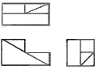
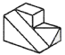
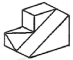
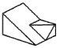
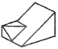
(정답률: 87%)
17. 다음 기하공차의 기호 중 단독형체에 적용하는 공차가 아닌 것은?
(정답률: 56%)
18. 다음 도면에서 치수기입을 가장 올바르게 나타낸 것은?
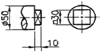
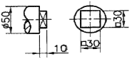
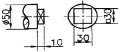
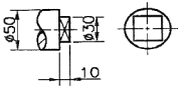
(정답률: 50%)
19. 축과 구멍의 실제 치수에 따라. 죔쇄가 생길 수도 있고 틈새가 생길 수도 있는 끼워 맞춤은?
- 이중 끼워맞춤
- 중간 끼워맞춤
- 헐거운 끼워맞춤
- 억지 끼워맞춤
(정답률: 67%)
20. 나사 표시 기호 중 유니파이 보통나사를 표시하는 기호는?
- M
- UNC
- PT
- G
(정답률: 85%)
21. 가공에 의한 컷의 줄무늬가 그림과 같은 동심원 모양의 줄무늬로 나타날 경우 이 줄무늬 방향의 기호는?
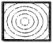
- C
- L
- M
- .R
(정답률: 71%)
22. 가동부분을 이동 중의 특정한 위치 혹은 이동한계의 위치로 표시하는데 사용하는 선은?
- 치수선
- 지시선
- 해칭선
- 가상선
(정답률: 62%)
23. 다음 중 회전도시 단면도로 나타내기에 적합한 것으로만 되어 있는 것은?
- 바퀴의 암(arm), 와셔, 축
- 바퀴의 암(arm), 기어의 이, 축
- 기어의 이, 작은 나사, 리벳
- 리브, 훅, 바퀴의 암(arm)
(정답률: 46%)
24. 나사붙이 테이퍼 핀 규격이 아래와 같을 때 테이퍼 핀의 호칭 지름은?
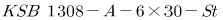
- 6mm
- 8mm
- 13mm
- 30mm
(정답률: 53%)
25. 베어링 기호가 "F684C2P6"으로 나타나 있을 때 "C2"가 나타내는 뜻은?
- 안지름 번호
- 레이디얼 내부 틈새
- 퀘도륜 모양
- 정밀도 등급
(정답률: 42%)
26. 센터리스 연삭에서 공작물의 이송속도와 관계없는 것은?
- 조정숫돌 바퀴의 지름
- 조정숫돌 바퀴의 회전수
- 연삭숫돌 바퀴에 대한 조정숫돌 바퀴의 경사각
- 연삭숫돌 바퀴의 지름
(정답률: 36%)
27. 선반의 구성에 대한 설명으로 틀린 것은?
- 베드는 가공 정밀도가 높고 내마모성이 커야 한다.
- 베드는 강력한 절삭에 쉽게 변형되도록 설계되어 있다.
- 공구대에 바이트를 고정하여 공작물 가공할 수 있다.
- 삼압대는 공작물을 지지하거나 드릴 등의 공구를 고정할 때 사용한다.
(정답률: 74%)
28. 구성인선(built-up edge)의 영향으로 틀린 것은?
- 절삭공구에 진동이 발생한다.
- 절삭공구 날 끝이 마멸된다.
- 공작물 가공면이 거칠어진다.
- 공작물 가공 치수가 정확해 진다.
(정답률: 79%)
29. 외측 마이크로미터에서 나사의 피치가 0.5mm, 딤블의 원주 눈금이 50등분 되어 있다면 최소 측정값은?
- 0.1mm
- 0.5mm
- 0.01mm
- 0.02mm
(정답률: 69%)
30. 결합도에 따른 숫돌바퀴의 선정 기준에 결합도가 높은 숫돌을 사용하는 경우가 아닌 것은?
- 접촉 면적이 클 때
- 가공면의 표면이 거칠 때
- 연삭 깊이가 작을 때
- 숫돌바퀴의 원주속도가 느릴 때
(정답률: 27%)
3과목: 기계공작법
31. 치수를 변화시키는 것보다 고정도의 표면거칠기를 얻기 위한 정밀입자 가공은?
- 보링
- 리밍
- 슈퍼피니싱
- 숏 피닝
(정답률: 52%)
32. 다음 중 보통 선반에서 할 수 없는 작업은?
- 드릴링 작업
- 보링 작업
- 인덱스 작업
- 널링 작업
(정답률: 69%)
33. 수직 밀링 머신의 장치 중 일반적인 운동 관계가 옳지 않은 것은?
- 주축 스핀들 - 회전
- 테이블 - 수직 이동
- 니 - 상하 이동
- 새들 - 전후 이동
(정답률: 56%)
34. 기계공작법을 크게 절삭 가공과 비절삭 가공으로 구분하여 분류할 때 절삭 가공에 해당하는 것은?
- 주조
- 용접
- 형삭
- 단조
(정답률: 74%)
35. 일반적으로 초경합금의 정면 밀링커터의 레이디얼 경사각이 가장 커야 하는 공작물 재질은?
- 알루미늄
- 황동
- 주철
- 탄소강
(정답률: 26%)
36. 드릴링 머신에서 작업할 수 없는 것은?
- 리밍
- 태핑
- 카운터싱킹
- 버니싱
(정답률: 59%)
37. 선반 작업에서 가늘고 긴 일감의 절삭력과 자중에 의한 휨과 처짐을 방지하기 위하여 사용하는 부속품은?
- 면판
- 맨드릴
- 방진구
- 콜릿척
(정답률: 77%)
38. 지름이 같은 3개의 와이어를 나사산에 대고 와이어의 바깥쪽을 마이크로미터로 측정하여 계산식에 의해 나사의 유효 지름을 구하는 측정 방법은?
- 나사 마이크로미터에 의한 방법
- 삼침법에 의한 방법
- 공구 현미경에 의한 방법
- 3차원 측정기에 의한 방법
(정답률: 54%)
39. 줄 작업 방법에 해당하지 않는 것은?
- 후진법
- 직진법
- 병진법
- 사진법
(정답률: 62%)
40. 광유에 비눗물을 첨가한 것으로 냉각작용이 비교적 크고, 윤활성도 있으며 값이 저렴한 절삭유는?
- 수용성 절삭유
- 유화유
- 지방질유
- 석유
(정답률: 36%)
4과목: CNC공작법 및 안전관리
41. 탄화턴스텐(WC), 티탄(Ti), 탄탈(Ta) 등의 분말을 코발드(Co) 또는 니켈(Ni) 분말과 혼합하여 프레스로 성형한 다음 약 1400℃ 이상의 고온에서 소결한 것으로 고온, 고속 절삭에서도 높은 경도를 유지하지만 진동이나 충격을 받으면 부서지기 쉬운 절삭 공구 재료는?
- 탄소 공구강
- 합금 공구강
- 고속도강
- 초경합금
(정답률: 54%)
42. 수평밀링머신의 프레인 커터 작업에서 상향 절삭과 하향 절삭에 대한 설명 중 틀린 것은?
- 상향 절삭은 절삭방향과 공작물의 이송방향이 같다.
- 상향 절삭에서는 이송 기구의 백래시가 자연스럽게 없어진다.
- 하향 절삭은 절삭된 칩이 이미 가공된 면 위에 쌓이므로 가공할 면을 잘 볼수 있다.
- 하향 절삭은 커터 날이 공작물을 누르며 절삭하므로 일감의 고정이 간편하다.
(정답률: 48%)
43. 일반적으로 CNC공작기계에 사용되는 자표축에서 절삭 동력이 전달되는 스핀들 축은?
- X축
- Y축
- Z축
- A축
(정답률: 57%)
44. CNC 선반의 반자동(MDI) 모드에서 실행하였을 경우 경보(alarm)가 발생하는 블록은?
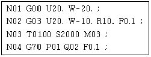
- N01
- N02
- N03
- N04
(정답률: 39%)
45. CNC 프로그램에서 G04 X2.0을 바르게 설명한 것은?
- 가공 후 2/100 만큼 후퇴
- 가공 후 2/100 만큼 전진
- 가공 후 2분간 정지
- 가공 후 2초간 정지
(정답률: 67%)
46. 다음 머시닝센터 프로그램에서 공구지름 보정에 사용된 보정번호는?
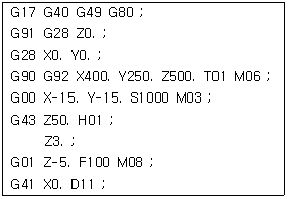
- D11
- T01
- M06
- H01
(정답률: 42%)
47. CAM 시스템에서 정보의 흐름을 단계별로 나타낸 것중 가장 타당한 것은?
- 도형정의 → CL 데이터 생성 → NC 코드 생성 → DNC
- CL데이터 생성 → 도형정의 → NC 코드 생성 → DNC
- 도형정의 → NC 코드 생성 → CL 데이터 생성 → DNC
- CL 데이터 생성 → NC 코드 생성 → 도형정의 → DNC
(정답률: 51%)
48. CNC선반에서 M30 × 1.5인 한줄 나사를 가공하려고 할 때, 회전당 이송속도(F) 값은?
- 0.35
- 0.7
- 1.5
- 3.0
(정답률: 67%)
49. 기계가공 전 매일 안전 점검할 사항이 아닌 것은?
- 공작물의 고정 상태 점검
- 작업장의 조명 상태 점검
- 기계의 수평 상태 점검
- 공구의 장착 및 파손 상태 점검
(정답률: 53%)
50. CNC 선반에서 단일형 고정 사이클 준비기능이 아닌 것은?
- G74
- G90
- G92
- G94
(정답률: 38%)
51. CNC 선반 가공 전에 육안으로 점검할 사항으로 적합하지 않은 것은?
- 척 압력의 적정 유지 상태
- 전자 회로 기판의 작동 상태
- 윤활유 탱크에 있는 윤활유의 양
- 절삭유의 유량과 작업 조명등의 밝기
(정답률: 55%)
52. CNC 선반 프로그램에서 시계방향(CW)의 원호를 가공 할 때 올바른 G-코드는?
- G02
- G03
- G04
- G⑤
(정답률: 76%)
53. 다음 CNC 선반 프로그램에서 N40 블록에서의 절삭속도는?
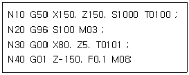
- 100 m/min
- 398 m/min
- 100 rpm
- .398 rpm
(정답률: 42%)
54. CNC 선반에서 나사를 가공하기 위해 주축의 회전수를 일정하게 제어하는 G코드는?
- G94
- G95
- G96
- G97
(정답률: 48%)
55. 다음 머시닝센터 프로그램에서 경보(alarm)가 발생할수 있는 블록의 전개번호는?
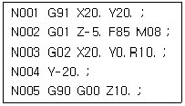
- N002
- N003
- N004
- N0⑤
(정답률: 44%)
56. 선반용 툴 홀더 ISO 규격 C S K P R 25 25 M 12에서 밑줄친 P가 나타내는 것은?
- 클램핑 방식
- 인서트형상
- 인서트 여유각
- 공구 방향
(정답률: 51%)
57. 머시닝센터 작업시 안전 및 유의 사항으로 틀린 것은?
- 비상정지 스위치의 위치를 확인한다.
- 일감은 고정 장치를 이용하여 견고하게 고정한다.
- 일감에 떨림이 생기면 거칠기가 나빠지고 공구파손의 원인이 된다.
- 측정기, 공구 등을 기계의 테이블에 올려놓고 사용하면 편리하다.
(정답률: 85%)
58. 다음 CNC 선반 프로그램에 대한 설명으로 틀린 것은?
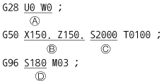
- A : 주축 원점 복귀시의 경유점 지정
- B : X축과 Z축의 좌표계 치수
- C : 주축회전수 2000rpm으로 일정하게 유지
- D : 원주 속도를 180m/min로 일정하게 제어
(정답률: 46%)
59. CNC 공작기계에서 사람의 손과 발에 해당하는 것은?
- 정보처리 회로
- 볼 스크루
- 서보기구
- 조작반
(정답률: 64%)
60. CNC 선반의 공구 기능중 T□□△△에서 △△의 의미는?
- 공구 보정 번호
- 공구 선택 번호
- 공구 교환 번호
- 공구 호출 번호
(정답률: 68%)